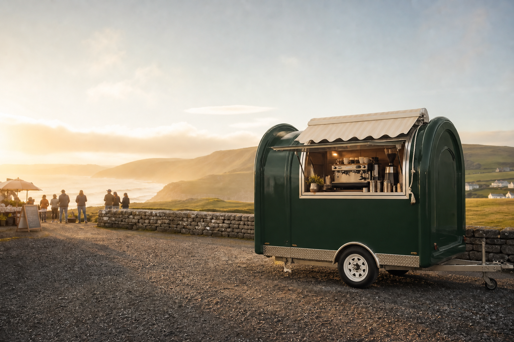
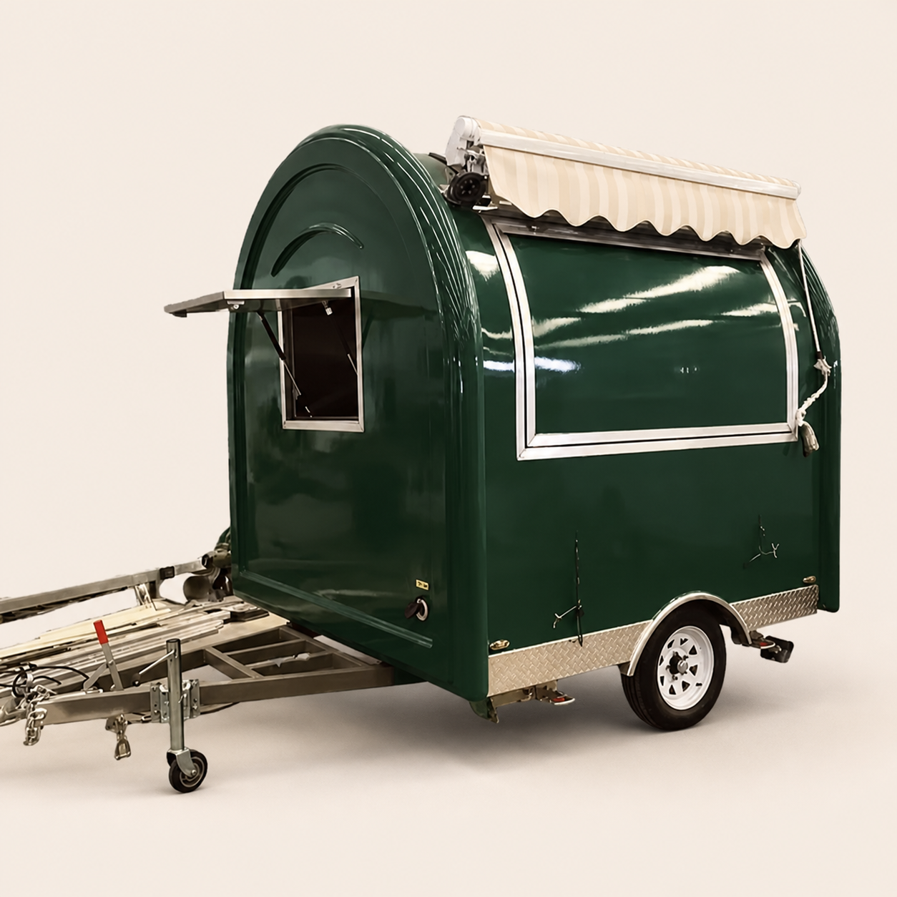
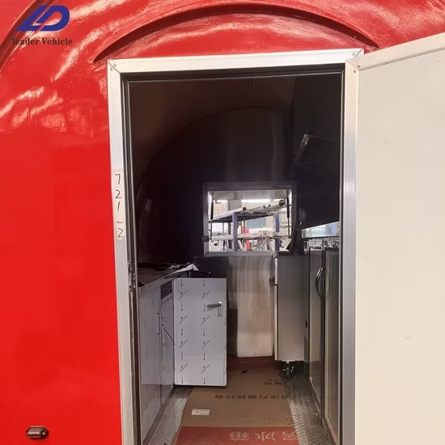
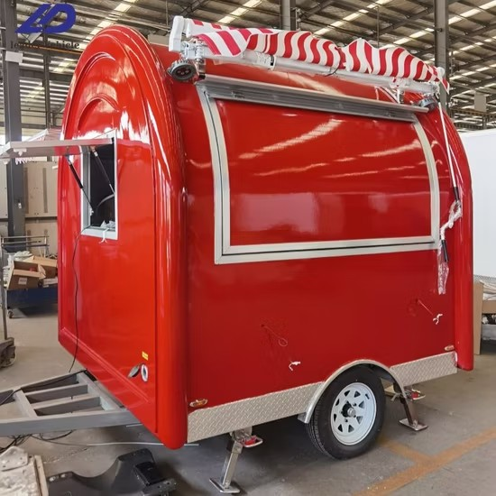
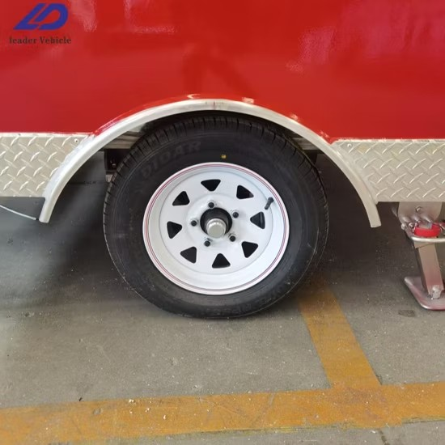

THE POD
One trailer.
Made your own.
A compact mobile café configured around your service, equipment and brand.

THE POD
A compact mobile café configured around your service, equipment and brand.

Illustrative colour finishMODEL 01 · LD-R200
A compact, rounded single-axle trailer with a distinctive profile and a practical interior that can be configured for coffee, crêpes, ice cream or light catering.
Specifications are taken from the supplier listing and remain subject to confirmation, Irish suitability checks and final build specification.
PRODUCT DETAILS
Supplier photographs shown for product reference. Final interiors and equipment are configured to order.


